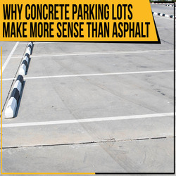

-
Why Use Concrete Instead of Asphalt for your Parking Lot
Posted on December 20, 2019 by Phoebee Johnson

When designing a parking lot, you may look at both asphalt and concrete options. However, there are many benefits of using a Houston ready mix contractor for your project. In our warm climate, concrete is a much more effective material to use for parking lots. Your Houston concrete supplier can work with you to find the best solution for your project.
Concrete Is More Reflective
While considering the options for your parking lot, you may not think about how reflective the surface will be. However, it is an important element to consider when installing a parking lot in Houston. Your Houston ready mix contractor can make your concrete fairly light-colored, which will increase how much light it reflects. This helps in a couple of ways. Concrete parking lots can help brighten surroundings, making visibility better at night compared to asphalt. This makes it safer for drivers and pedestrians.
In addition, because the sun reflects off of concrete, it helps reduce the temperature in your lot. This makes it more comfortable for those who come to your facility. Also, asphalt can become soft and oily in hot temperatures, which can be uncomfortable to drive or walk on. Concrete, on the other hand, tends to withstand heat better and maintain a lower temperature due to its lighter color.
Strength and Durability
If your parking lot will get a lot of use, you want it built out of a strong, durable material. Concrete is capable of enduring a lot of traffic and tends to last longer than asphalt. Because of this, concrete a great long-term investment for your parking area.
Also, when you are planning your parking lot project, you have to factor in long-term maintenance costs. Typically, the only maintenance you need to do for concrete is joint sealing and cleaning once a year. Overtime, this can save you a lot in maintenance costs. Asphalt, on the other hand, usually requires regular patching, surface sealing, and resurfacing.
Discuss Design Options with your Houston Ready Mix Contractor
Your Houston ready mix contractor can also provide you with options for various textures, colors, and more. If you want your parking lot to make an impression, you can design your concrete in a variety of different ways. Concrete offers more versatility compared to asphalt and provides a professional, high-end appearance for your business.
Texas Concrete Enterprise Ready Mix, Inc. is a Houston concrete supply company offering comprehensive concrete services. Our team is detail-oriented and knowledgeable to ensure that your formulation is precise and exactly what you need for your project. We have the industry experience to collaborate with you to find the best concrete mix for your needs. Call us today at (713) 227-1122 to learn more about our services or to talk to one of our expert technicians about your concrete requirements. We look forward to working with you.
This entry was posted in Concrete, Ready Mix Concrete. Bookmark the permalink.